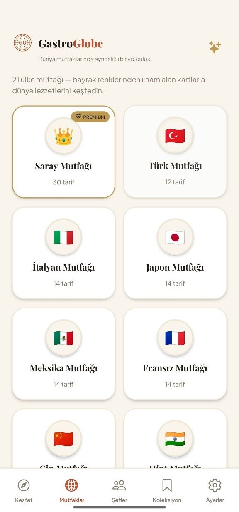
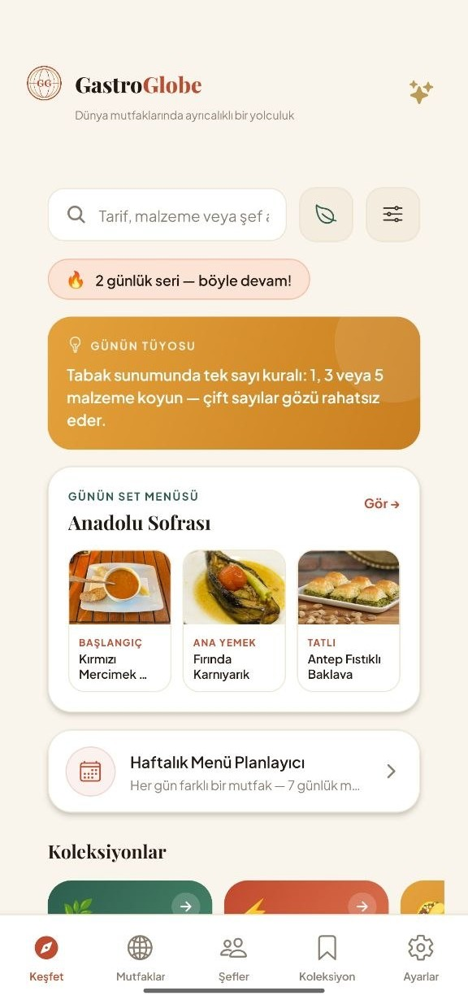
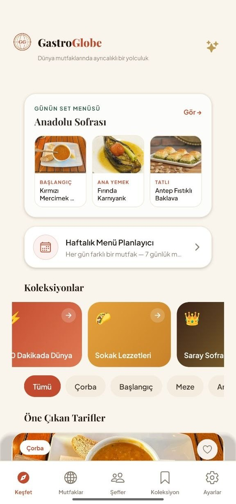
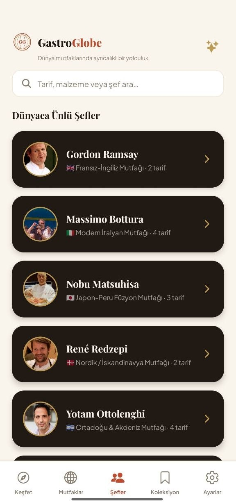
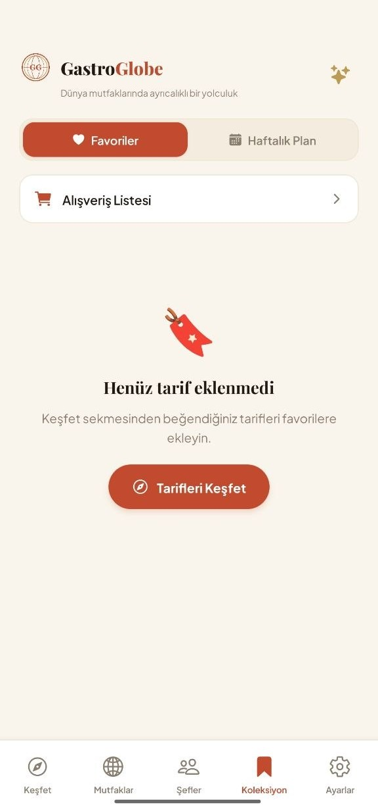
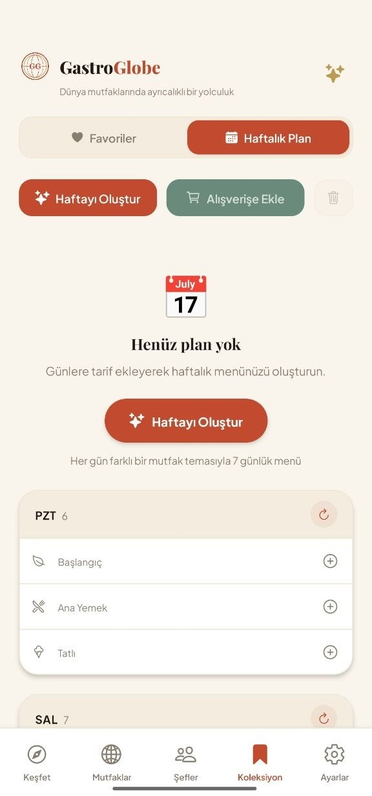
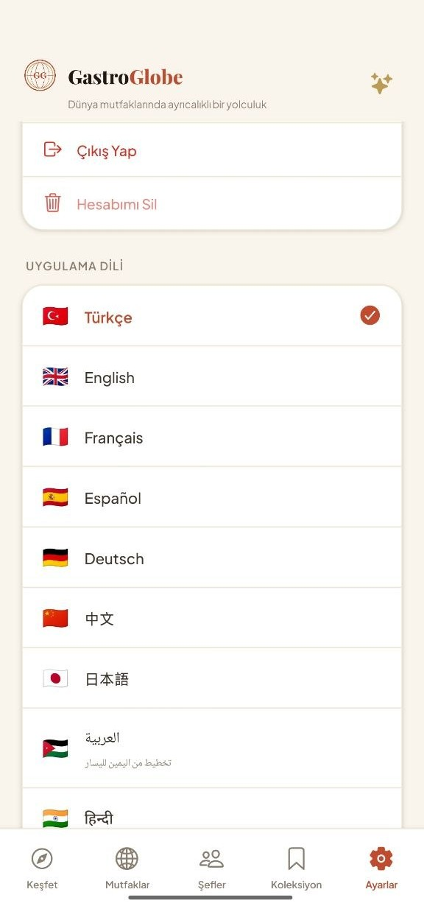
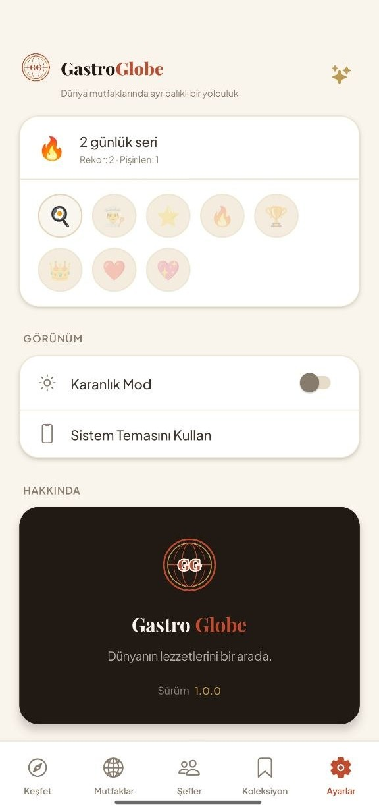

✕
405+ recipes across 21 cuisines, translated into 15 languages — with a weekly meal planner, smart shopping lists, and step-by-step cooking mode.


From discovery to the dinner table — one app, every step.
Here's what most cooking apps don't do.
Every recipe — title, ingredients, and every step — fully translated, not machine-guessed.
From street food to royal palace kitchens.





